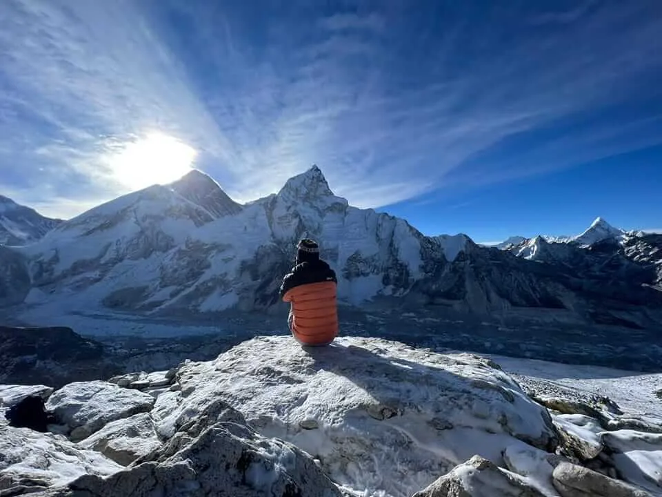
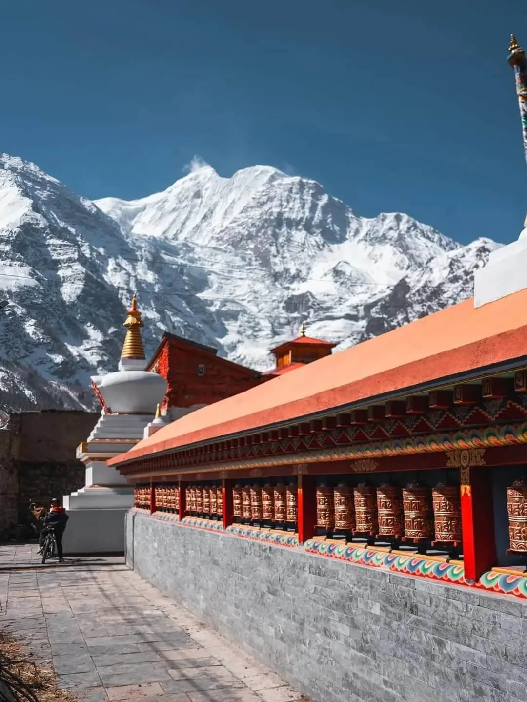
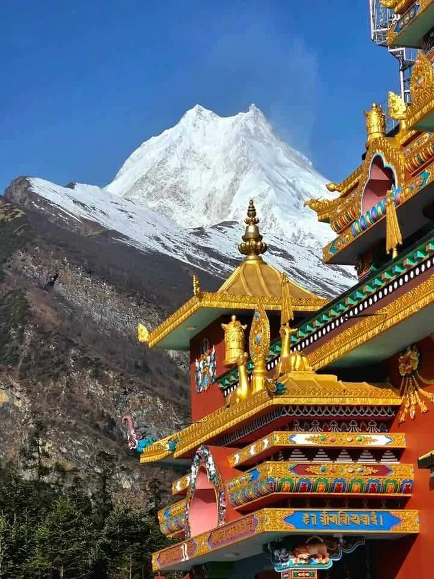
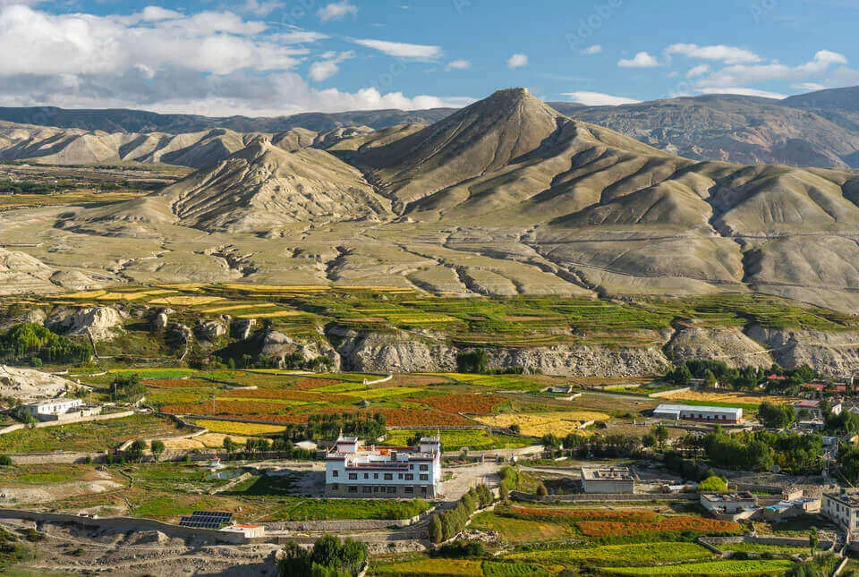
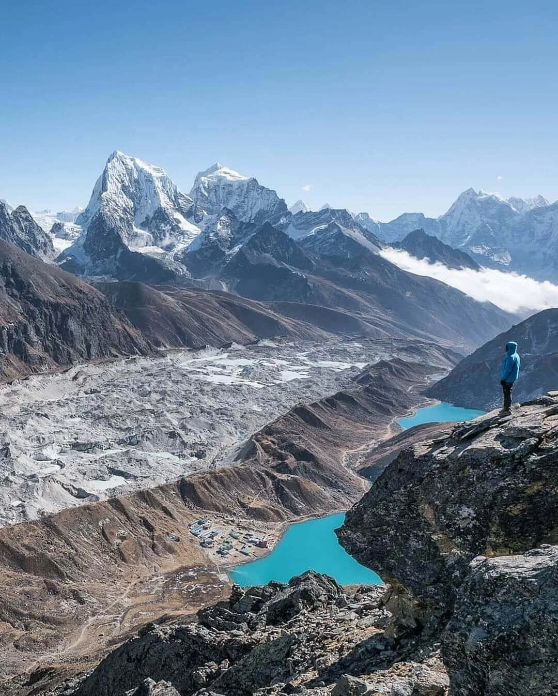
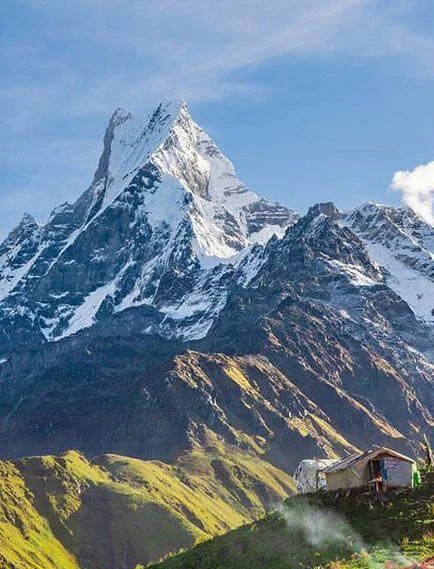

1. Strategic Overview: Navigating Nepal's Diverse Terrains, Altitudes & Ecological Zones
Few countries on Earth compress as much dramatic geographic diversity into their borders as Nepal. Across a horizontal span of just 150 to 250 kilometers from south to north, the country ascends from the subtropical plains of the Terai (just 60 meters above sea level) through the lush, temperate mid-hills of Kathmandu and Pokhara, culminating at the highest point on the planet—the summit of Mount Everest (8,848.86 m / 29,031.7 ft).
This vertical topography produces three distinct ecological and cultural zones:
- The Lowland Terai (60 m – 1,000 m): Subtropical river basins, dense Sal forests, elephant grass savannas, and tranquil wetlands home to Greater One-Horned Rhinoceroses, Royal Bengal Tigers, and the ancient Buddhist pilgrimage sites of Lumbini.
- The Mid-Hills (1,000 m – 3,000 m): Fertile agricultural valleys, cascading terraced hillsides, pine and oak forests, and bustling cultural hubs including Kathmandu and Pokhara.
- The High Himalaya (3,000 m – 8,848 m): Alpine pastures, rugged glacial moraines, towering granite massifs, and traditional Sherpa, Gurung, Tamang, and Tibetan Buddhist mountain settlements.
To help you match your personal travel preferences, physical fitness, and available timeframe to the ideal region, here is our master comparative breakdown of Nepal's top 10 destinations:
| Destination | Primary Region | Elevation | Best Season | Ideal Duration | Primary Highlight | Fitness Level |
|---|---|---|---|---|---|---|
| 1. Kathmandu Valley | Central Mid-Hills | 1,400 m | Oct – Apr | 3 – 4 Days | 7 UNESCO World Heritage Sites & Living Culture | Easy (Leisure) |
| 2. Pokhara Valley | Western Mid-Hills | 822 m | Sep – May | 3 – 5 Days | Phewa Lake, Adventure Sports & Fishtail Views | Easy to Moderate |
| 3. Everest (Khumbu) | Eastern Himalaya | 2,840 m – 5,545 m | Mar–May, Oct–Dec | 12 – 16 Days | Everest Base Camp, Kala Patthar & Sherpa Culture | Strenuous (High Altitude) |
| 4. Annapurna Region | Central/Western Himalaya | 1,000 m – 5,416 m | Mar–May, Sep–Nov | 4 – 14 Days | Poon Hill, Annapurna Base Camp & Thorong La | Moderate to Challenging |
| 5. Chitwan National Park | Southern Terai | 150 m | Oct – Mar | 3 – 4 Days | One-Horned Rhinos, Bengal Tigers & Jungle Safaris | Easy (Family-Friendly) |
| 6. Upper Mustang | Trans-Himalayan Plateau | 3,000 m – 4,000 m | Apr – Nov (Monsoon OK) | 10 – 14 Days | Walled City of Lo Manthang & Ancient Sky Caves | Moderate to Challenging |
| 7. Langtang Valley | Northern Central Himalaya | 1,460 m – 4,984 m | Mar–May, Oct–Nov | 7 – 9 Days | Glacial Valleys, Kyanjin Gompa & Tamang Heritage | Moderate |
| 8. Manaslu & Tsum Valley | West-Central Himalaya | 700 m – 5,106 m | Mar–May, Sep–Nov | 14 – 18 Days | Larkya La Pass, Remote Gompas & Sacred Peace | Challenging to Strenuous |
| 9. Rara Lake | Far-Western Himalaya | 2,990 m | Apr–Jun, Sep–Nov | 6 – 8 Days | Nepal's Largest Alpine Mirror & Pure Solitude | Moderate (Remote Travel) |
| 10. Lumbini | Southwestern Terai | 150 m | Oct – Mar | 2 – 3 Days | Birthplace of Lord Buddha & Global Monasteries | Easy (Pilgrimage/Culture) |
2. Destination 1: Kathmandu Valley — Ancient UNESCO Royal Squares, Sacred Stupas & Living Culture
For centuries, the Kathmandu Valley was a bustling crossroads of trans-Himalayan trade, where Indian merchants trading spices and Tibetan caravans carrying salt, wool, and gold met under the shadow of the Himalayas. This extraordinary fusion of Hindu and Buddhist traditions gave birth to the rich Newari civilization, renowned for its intricate brickwork, multi-tiered pagoda roofs, and masterfully carved wooden lintels.
Today, the Kathmandu Valley is recognized worldwide for its astonishing density of cultural heritage: seven distinct UNESCO World Heritage Monument Zones located within a 20-kilometer radius.

The Three Medieval Royal Squares
Before Nepal was unified in the late 18th century, the Kathmandu Valley was divided into three rival Malla city-kingdoms, each competing to construct the most opulent palaces and shrines:
- Kathmandu Durbar Square (Basantapur): The historic center of the capital, home to the Hanuman Dhoka Royal Palace, the towering Taleju Temple, and the Kumari Ghar—the ornate residence of the living child goddess Kumari.
- Patan Durbar Square (Lalitpur): The valley's artistic jewel, boasting the finest concentration of Newari architecture, the stunning stone-carved Krishna Mandir, and the world-class Patan Museum housed inside the restored royal palace.
- Bhaktapur Durbar Square: Preserved like an open-air medieval museum, Bhaktapur feels frozen in time with its car-free cobblestone lanes, the 5-story Nyatapola Temple (Nepal's tallest pagoda), the 55-Window Palace, and traditional pottery squares where clay vessels dry in the sun.
Sacred Spiritual Monuments
Beyond the royal squares lie three of the most sacred spiritual centers in South Asia:
- Boudhanath Stupa: One of the largest spherical stupas in the world and the beating spiritual heart of Tibetan Buddhism in Nepal. Join hundreds of Tibetan pilgrims, red-robed monks, and locals performing clockwise circumambulations (kora) around the giant mandala as prayer flags flutter overhead and butter lamps glow at dusk.
- Swayambhunath (The Monkey Temple): Perched on a forested conical hill west of the city, this 2,000-year-old stupa offers sweeping panoramic views across the valley basin. Holy rhesus macaque monkeys dart between ancient chaityas and stone carvings.
- Pashupatinath Temple: The most sacred Hindu shrine dedicated to Lord Shiva in Nepal, situated along the holy Bagmati River. While the inner sanctum is reserved for practicing Hindus, visitors can observe the ancient open-air cremation rituals at the Arya Ghats from the eastern riverbank and attend the hypnotic evening Ganga Aarti ceremony filled with incense, bells, and devotional chanting.
3. Destination 2: Pokhara — The Himalayan Adventure Capital & Serene Phewa Lakeside
Located 200 kilometers west of Kathmandu at a comfortable subtropical altitude of 822 meters, Pokhara is Nepal's premier leisure and adventure capital. In stark contrast to the frenetic energy and traffic of Kathmandu, Pokhara welcomes travelers with crisp mountain breezes, clean lakeside boulevards, and jaw-dropping vertical relief: the snow-covered pyramids of the Annapurna Massif and the sacred, unclimbed needle of Machhapuchhre (Fishtail Peak, 6,993 m) rise dramatically just 28 kilometers north of town.

Lakeside Serenity & Mountain Viewpoints
The soul of Pokhara revolves around Phewa Lake (Phewa Tal). Renting a brightly painted wooden doonga (rowboat) at dusk reveals mirror-like reflections of the mountains shimmering across the water. In the center of the lake sits the island temple of Tal Barahi. For those seeking absolute tranquility away from the cafe strip, nearby Begnas Lake and Rupa Lake offer quiet rural villages and serene hillside orchards.
Perched on ridges surrounding the valley are iconic panoramic viewpoints:
- Sarangkot (1,600 m): The world-famous sunrise viewpoint where dawn paints Dhaulagiri (8,167 m), Annapurna I (8,091 m), and Fishtail Peak in shades of molten gold.
- World Peace Pagoda (Shanti Stupa): A brilliant white Buddhist stupa sitting atop Anadu Hill, overlooking Phewa Lake and the sprawling valley below.
- Pumdikot Shiva Statue: A towering 51-foot statue of Lord Shiva on a southern hill ridge, offering unobstructed 360-degree vistas of the entire Annapurna range.
The Adrenaline Capital of the Himalayas
Pokhara has earned international acclaim as one of the top commercial tandem paragliding destinations in the world. Thermals rising from Sarangkot carry pilots high above the lake with snow-capped giants filling the northern horizon. The city also offers thrilling zip-lining (the Zip-Flyer features a 1.8 km cable with a 600 m vertical drop), ultralight aircraft flights into the Annapurna foothills, bungee jumping, and white-water kayaking along the Class III–IV rapids of the Upper Seti River.
| Feature | Kathmandu | Pokhara |
|---|---|---|
| Elevation & Climate | 1,400 m (Cooler, temperate) | 822 m (Subtropical, warmer) |
| Vibe & Atmosphere | Ancient, historic, bustling, urban | Relaxed, scenic, outdoor-oriented, lakeside |
| Mountain Visibility | Visible from hill edges (Nagarkot, Chandragiri) | Directly towering over city streets & lakes |
| Top Highlights | UNESCO palaces, temples, stupas, culture | Boating, paragliding, sunrise hikes, cafes |
| Trekking Hub For | Everest, Langtang, Manaslu | Annapurna Base Camp, Mardi Himal, Poon Hill |
4. Destination 3: Everest Region (Khumbu) — The Foot of Sagarmatha & Sherpa Mountain Heritage
For mountaineers, trekkers, and adventurers around the globe, the Khumbu Region represents the ultimate pilgrimage. Located in northeastern Nepal within the UNESCO-protected Sagarmatha National Park, this high-altitude alpine kingdom is crowned by the highest mountain on Earth: Mount Everest (known locally as Chomolungma in Sherpa and Sagarmatha in Nepali).
The journey begins with the legendary 35-minute STOL (Short Takeoff and Landing) flight into Tenzing-Hillary Airport in Lukla (2,846 m), landing on an uphill runway carved into the mountainside. From Lukla, trails wind through lush pine forests, cross deep gorges on suspension bridges hung with prayer flags, and trace the roaring Dudh Koshi River into the heart of the Sherpa homeland.

Namche Bazaar & Sherpa Cultural Heart
Carved into a natural horseshoe-shaped mountain bowl at 3,440 meters, Namche Bazaar is the vibrant capital of the Khumbu. Trekkers spend vital acclimatization days here exploring artisan bakeries, gear shops, the Sherpa Culture Museum, and viewpoints overlooking the majestic spire of Ama Dablam (6,812 m), universally celebrated as the most beautiful mountain in the Himalayas.
Further up the valley lies Tengboche Monastery (3,867 m), the spiritual epicenter of the Khumbu. Here, monks chant morning prayers against the backdrop of Everest, Lhotse (8,516 m), and Nuptse.
Everest Base Camp, Kala Patthar & Gokyo Lakes
The classic trek culminates at Everest Base Camp (5,364 m), situated directly upon the active rubble of the Khumbu Glacier, and the ascent of Kala Patthar (5,545 m), which provides the quintessential, unobstructed close-up view of Everest's south face and the Khumbu Icefall.
For those seeking turquoise waters and fewer crowds, the alternative Gokyo Lakes Trek ascends a parallel glacial valley to six stunning high-altitude oligotrophic lakes, crossing the challenging Cho La Pass (5,420 m) or Renjo La Pass (5,360 m).
5. Destination 4: Annapurna Region — From Rhododendron Forests to Alpine Amphitheaters
While Everest offers unmatched vertical prestige, the Annapurna Region is widely revered by seasoned trekkers as the most ecologically and scenically diverse mountain destination in Nepal. Protected under the 7,629-square-kilometer Annapurna Conservation Area Project (ACAP), the region transitions from terraced paddy fields, subtropical bamboo groves, and lush rhododendron forests to arid alpine tundra and trans-Himalayan Tibetan-style plateaus.

Annapurna Base Camp (ABC / The Sanctuary)
The Annapurna Sanctuary (4,130 m) is a colossal high-glacial basin walled in on all sides by an unbroken ring of Himalayan giants. Standing at ABC at sunrise provides a 360-degree panoramic view of Annapurna I (8,091 m—the 10th highest peak in the world), Annapurna South (7,219 m), Hiunchuli (6,441 m), and the sheer vertical face of Machhapuchhre (6,993 m). The trek takes 7 to 10 days from Pokhara, winding through authentic Gurung villages such as Ghandruk and Chomrong.
Poon Hill & The Legendary Annapurna Circuit
For beginner hikers and those with limited time, Ghorepani Poon Hill (3,210 m) offers a 4-to-5-day loop through the world's largest rhododendron forests (which erupt into crimson, pink, and white blooms in March and April). The predawn hike to Poon Hill yields one of the finest mountain sunrises in Asia, encompassing both the Annapurna and Dhaulagiri ranges.
For epic long-distance trekkers, the classic Annapurna Circuit circumnavigates the entire massif, crossing the formidable Thorong La Pass (5,416 m / 17,769 ft) into the holy pilgrimage shrine of Muktinath and the arid Kali Gandaki Gorge—the deepest river gorge on Earth.
| Trek Route | Duration | Max Elevation | Difficulty | Best For |
|---|---|---|---|---|
| Ghorepani Poon Hill | 4 – 5 Days | 3,210 m | Moderate | Beginners, families, spring rhododendron blooms |
| Mardi Himal Trek | 5 – 6 Days | 4,500 m | Moderate | Off-the-beaten-path ridge walking & close-up Fishtail views |
| Annapurna Base Camp (ABC) | 7 – 10 Days | 4,130 m | Moderate to Challenging | Glacial amphitheater, iconic 360-degree mountain bowl |
| Annapurna Circuit Trek | 12 – 16 Days | 5,416 m (Thorong La) | Challenging | Trans-Himalayan crossing, ecological diversity, Muktinath |
6. Destination 5: Chitwan National Park — Subtropical Jungles, One-Horned Rhinos & Royal Bengal Tigers
When travelers imagine Nepal, snow-capped peaks invariably dominate their thoughts. Yet in the southern plains (Terai), just a 5-hour drive or 20-minute flight from Kathmandu, lies Chitwan National Park: a lush 952-square-kilometer subtropical wilderness and Nepal's first national park, designated a UNESCO World Heritage Site in 1984.
Chitwan (meaning "Heart of the Jungle") is one of Asia's greatest conservation success stories. Its dense Sal forests, oxbow lakes, and tall elephant grass savannas harbor incredible concentrations of megafauna that rival African safari parks.

Wildlife Census & Iconic Fauna
Thanks to strict community-based buffer zone enforcement and anti-poaching patrols by the Nepal Army, Chitwan boasts thriving wildlife populations:
- Greater One-Horned Rhinoceros: Over 690 rhinos roam Chitwan. Sightings during safaris are virtually guaranteed, especially near riverbanks and wallows.
- Royal Bengal Tiger: Chitwan is home to approximately 128 breeding adult tigers. While solitary and elusive, fresh pugmarks are spotted daily along jungle firelines.
- Wild Elephants & Leopards: Herds of wild Asian bull elephants roam the park, while common leopards inhabit forest fringes.
- Gharials & Marsh Muggers: The Rapti and Narayani rivers shelter the critically endangered fish-eating gharial crocodile with its slender, needle-toothed snout, alongside marsh muggers.
- Birdwatching Paradise: With over 540 recorded bird species, Chitwan is recognized globally as an Important Bird Area (IBA), hosting giant hornbills, Bengal floricans, and kingfishers.
Safari Adventures & Tharu Living Heritage
The classic Chitwan itinerary spans 3 days and 2 nights, including:
- Open-Top 4WD Jeep Safaris: Venturing deep into the core jungle zones and community forests to track rhinos, sloth bears, and deer.
- Dugout Canoe Floats: Silently gliding down the misty Rapti River at dawn while spotting basking crocodiles and water birds along the muddy banks.
- Guided Jungle Foot Safaris: Walking through the wild escorted by two veteran local naturalists armed with bamboo safety batons—an exhilarating, sensory adventure.
- Tharu Cultural Evenings: Experiencing the rich culinary traditions and vibrant peacock and stick dances of the indigenous Tharu people, who have lived in harmony with the Terai jungle for centuries.
7. Destination 6: Upper Mustang — The Mystical Walled Kingdom of Lo Manthang
Tucked behind the towering rain-shadow barrier of the Annapurna and Dhaulagiri massifs along the northern border with Tibet lies Upper Mustang: the ancient Kingdom of Lo. Geographically and culturally an extension of the Tibetan Plateau, this high-altitude desert was closed to foreign travelers until 1992 and remains one of the most culturally preserved Tibetan enclaves on Earth.
The landscape of Upper Mustang resembles an otherworldly moonscape: sweeping ochre and terracotta cliffs, deep wind-eroded river canyons, sculpted sandstone hoodoos, and white-washed mudbrick villages shaded by green willow trees.

The Walled City of Lo Manthang
The journey reaches its climax at Lo Manthang (3,840 m), the historic fortified capital founded in 1380 by Ame Pal. Encircled by a 6-meter-high defensive stone wall, Lo Manthang is entered through a single massive wooden gateway. Inside, narrow labyrinthine alleyways lead to the 4-story King's Palace and ancient Tibetan Buddhist monasteries:
- Jampa Lhakhang: Built in the early 15th century, housing a colossal 50-foot clay statue of Maitreya (the Future Buddha) and exquisite wall-filling geometric mandalas.
- Thubchen Gompa: A grand assembly hall supported by massive wooden pillars, featuring priceless 600-year-old murals restored with international heritage support.
- Chode Gompa: The active monastic college where young monks study Tibetan philosophy, chants, and ritual trumpet music.
Ancient Sky Caves & The Tiji Festival
Carved into vertical cliff faces throughout Mustang are thousands of man-made sky caves dating back 2,500 to 3,000 years. Archaeological excavations have revealed ancient burial chambers, pre-Buddhist paintings, and centuries-old Tibetan manuscripts preserved by the arid climate.
Every May, Lo Manthang comes alive during the Tiji Festival (Tenchi), a vibrant 3-day masked dance ritual commemorating the victory of Dorje Jono over a demonic force that sought to bring drought and ruin to the kingdom.
8. Destination 7: Langtang Valley — The Valley of Glaciers & Tamang Resilience
Located just north of the Kathmandu Valley along the Tibetan frontier, Langtang National Park was Nepal's first Himalayan national park, established in 1976. Revered by legendary mountaineer Bill Tilman as "one of the world's most beautiful valleys," the Langtang Valley offers an exceptional combination of soaring glaciated peaks, rich biodiversity, and deep Tamang Buddhist culture—all accessible without the expense or weather delays of domestic mountain flights.

The Journey Up the Glacial Gorge
The trek begins with an adventurous 7-to-8-hour overland drive from Kathmandu to Syabrubesi (1,460 m). The trail ascends through dense oak, hemlock, and bamboo forests flanking the roaring Langtang Khola. Lucky trekkers may catch glimpses of the endangered Red Panda, musk deer, and Himalayan black bears in the dense rhododendron canopies.
As the gorge opens into a wide U-shaped glacial valley at 3,000 meters, the colossal wall of Langtang Lirung (7,227 m) and its hanging glaciers dominate the skyline.
Kyanjin Gompa & Alpine Ascents
The cultural and trekking apex of the valley is Kyanjin Gompa (3,870 m), a peaceful mountain settlement nestled beneath glacial moraines. Highlights include:
- The Historic Yak Cheese Factory: Established with Swiss assistance in 1955, producing wheels of authentic, nutty Himalayan yak cheese.
- Kyanjin Ri (4,773 m): A popular acclimatization viewpoint hike taking 3 to 4 hours roundtrip, yielding breathtaking panoramas of the Langtang glacier.
- Tserko Ri (4,984 m): A challenging full-day alpine scramble offering an unrivaled 360-degree vista of Langtang Lirung, Kinshung, Gangchempo, and peaks stretching into Tibet.
| Parameter | Standard Specification | Trekker Tip |
|---|---|---|
| Total Trek Duration | 7 – 8 Days (Roundtrip Kathmandu) | Can be extended to Gosaikunda Lakes (+4 days) |
| Trailhead Access | Overland Drive to Syabrubesi (122 km) | Private 4WD Scorpio Jeep is faster and more comfortable than local bus |
| Maximum Sleeping Altitude | 3,870 m (Kyanjin Gompa) | Low risk of severe AMS compared to Everest Base Camp |
| Highest Elevation Peak | 4,984 m (Tserko Ri summit) | Start by 5:30 AM to beat afternoon cloud buildup |
| Permits Required | Langtang National Park (NPR 3,000) + TIMS Card | Processed in Kathmandu or at Dhunche checkpoint |
9. Destination 8: Manaslu Circuit & Tsum Valley — The Untamed Himalayan Circuit
For travelers longing for the raw, untamed spirit of the classic Annapurna Circuit before the construction of mountain roads, the Manaslu Circuit is Nepal's premier wilderness circuit. Circling Mount Manaslu (8,163 m / 26,781 ft)—the eighth highest mountain on Earth—this 14-to-18-day trek offers dramatic river canyons, steep suspension bridges, pristine high-altitude villages, and the thrilling crossing of Larkya La Pass (5,106 m).

The Dramatic Ascent & Larkya La Pass
Starting from Machha Khola or Sotikhola, the trail follows the wild, churning Budhi Gandaki River through narrow rock gorges carved into vertical granite cliffs. As elevation increases, Gurung settlements give way to high-altitude Bhotia villages like Lho (3,180 m) and Sama Gaun (3,530 m), where daily life revolves around Tibetan Buddhism, yak herding, and barley farming.
The crown jewel of the trek is the crossing of Larkya La Pass (5,106 m / 16,752 ft). Starting before dawn from the rustic stone shelters of Dharmasala, trekkers navigate glacial moraines to reach the prayer-flag-strewn pass, greeted by views of Himlung Himal (7,126 m), Cheo Himal, Kang Guru, and the Annapurna range.
Tsum Valley: The Beyul of Sacred Peace
Trekkers with extra time can branch eastward into the Tsum Valley—a sacred Tibetan Buddhist valley of non-violence (known as a Beyul). By ancient decree passed in 1920, hunting, animal slaughter, and fire lighting in the forests are strictly forbidden. The valley is home to centuries-old stone gompas including Mu Gompa (3,700 m), Rachen Gompa, and Milarepa's sacred meditation cave.
10. Destination 9: Rara Lake — The Queen of Lakes in the Untouched Far West
In the remote Far-Western Development Region of Nepal lies its largest and most pristine freshwater body: Rara Lake, affectionately nicknamed the "Queen of Lakes" by the late King Mahendra. Resting at an elevation of 2,990 meters within Rara National Park (Nepal's smallest national park at 106 sq km), Rara Lake spans an impressive 10.8 square kilometers and plunges to depths of 167 meters.
What makes Rara extraordinary is its absolute, soul-soothing solitude. Free from the heavy foot traffic and commercial lodges of the Everest and Annapurna corridors, Rara offers visitors pure Himalayan tranquility.

The Shifting Colors of Rara
Rara Lake is famous for its crystalline transparency. Depending on the hour, the angle of sunlight, and prevailing winds, the water shifts through a mesmerizing palette of colors—from morning cobalt blue to midday turquoise and evening emerald green. The lake is surrounded by thick forests of blue pine, black juniper, and Himalayan cypress, with the snow-capped summits of the Chuchemara Danda framing the southern horizon.
Key activities at Rara include:
- Circumference Hike or Horseback Ride: A peaceful 14-kilometer trail circles the perimeter of the lake, taking 4 to 5 hours on foot or by local mountain horse.
- Chuchemara Danda Climb (4,087 m): The premier viewpoint hike on the lake's southern rim, offering breathtaking aerial perspectives of the deep blue lake framed by the Far-Western Himalayan peaks.
- Birdwatching: During spring and autumn migrations, Rara serves as a critical resting stop for migratory waterfowl, including mallards, coots, and black-necked grebes.
- Milky Way Stargazing: With zero light pollution, the night sky above Rara displays brilliant cosmic panoramas of the Milky Way core.
| Travel Route | Transportation Mode | Travel Time | Pros & Cons |
|---|---|---|---|
| Flight Route (via Talcha) | Flight Kathmandu → Nepalgunj → Talcha Airstrip + 2-hour walk | 1 – 2 Days | Fast and scenic; flights from Nepalgunj to Talcha are weather-dependent |
| Overland 4WD Jeep Route | Kathmandu → Surkhet → Karnali Highway → Nagma → Rara Lake | 3 – 4 Days (each way) | Authentic cultural overland expedition; rough dirt roads and bumpy terrain |
11. Destination 10: Lumbini — Spiritual Pilgrimage to the Birthplace of Lord Buddha
Located in the tranquil southern lowlands of the Rupandehi district, Lumbini is one of the four sacred holy pilgrimage sites of Buddhism and a designated UNESCO World Heritage Site since 1997. It is revered across the globe as the birthplace of Prince Siddhartha Gautama—the historical Buddha—born here in May 623 BCE.

The Sacred Garden & Mayadevi Temple
The spiritual heart of Lumbini is the Mayadevi Temple, which encloses the excavated archaeological foundations of ancient brick shrines dating back to the 3rd century BCE. Inside, a protective glass partition preserves the sacred Marker Stone, identifying the exact spot where Queen Mayadevi gave birth while holding onto the branch of a Sal tree.
Immediately adjacent to the temple stand two priceless ancient treasures:
- The Ashoka Pillar: Erected in 249 BCE by Emperor Ashoka of India during his royal pilgrimage, bearing an ancient Brahmi inscription declaring: "Here the Buddha, the sage of the Shakyas, was born."
- The Holy Pushkarini Pond: The sacred square water basin where Queen Mayadevi bathed prior to delivery and where infant Siddhartha received his first purifying bath.
The International Monastic Zone
Surrounding the sacred garden is a master-planned 3-square-mile sanctuary designed by renowned Japanese architect Kenzo Tange. Divided by a central water canal into East (Theravada) and West (Mahayana/Vajrayana) Monastic Zones, countries from around the world have built magnificent monasteries reflecting their national architectural styles:
- Royal Thai Buddhist Monastery: A pristine white-marble monastery built in traditional Thai royal style.
- German Lotus Stupa: Built by the German Tara Foundation, featuring intricate Tibetan Buddhist frescoes.
- Chinese Zhong Hua Monastery: A grand imperial pagoda palace reminiscent of the Forbidden City.
- Myanmar Golden Monastery: Adorned with delicate golden spires honoring Shwedagon Pagoda.
12. Seasonal Timing & Regional Weather Calendar: Matching Destinations to the Best Months
Because Nepal encompasses subtropical lowlands, temperate mid-hills, and arctic high-altitude peaks, optimal timing varies significantly depending on which destination you choose. Understanding Nepal's distinct weather patterns is the secret to a successful journey:

The Four Primary Travel Seasons
- Autumn (Late September to November) — The Peak Season: The monsoon rains clear away by late September, leaving behind washed-clean mountain air, low humidity, and crystalline blue skies. This is the gold-standard season for high-altitude trekking in Everest, Annapurna, Manaslu, and Langtang, as well as cultural touring in Kathmandu and Pokhara.
- Spring (March to May) — The Rhododendron & Wildlife Season: Temperatures warm pleasantly across the country. Rhododendrons, magnolias, and wild orchids blanket the mid-altitude hillsides between 2,000 and 3,500 meters in vibrant blooms. In Chitwan and the Terai, dry grasses thin out, making March and April the single best window for spotting tigers and rhinos.
- Winter (December to February) — Solitude & Clear Mid-Hills: High-altitude mountain passes experience heavy snow and sub-zero night temperatures (-15°C to -25°C). However, the mid-hills (Kathmandu, Pokhara) and southern plains (Chitwan, Lumbini) enjoy sunny days (18°C–22°C), mild weather, and low crowds.
- Monsoon (June to August) — The Trans-Himalayan Secret: Heavy rains sweep across southern and central Nepal. However, destinations located behind the Himalayan rain shadow—most notably Upper Mustang and Upper Dolpo—remain dry, sunny, and temperate.
| Month | High Himalaya (Everest / Annapurna) | Mid-Hills (Kathmandu / Pokhara) | Terai (Chitwan / Lumbini) | Rain Shadow (Upper Mustang) |
|---|---|---|---|---|
| Jan – Feb | Very Cold (-20°C nights), crisp skies, snowy passes | Sunny days (16°C–19°C), chilly mornings | Pleasant days (22°C), cool nights, winter fog | Cold, snow possible, many locals migrate south |
| Mar – Apr | Superb; warming trails, blooming rhododendrons | Warm & sunny (22°C–26°C), clear views | Warm (28°C–32°C); prime wildlife visibility | Spring opening, pleasant trekking weather |
| May | Warm; climbing season, afternoon pre-monsoon clouds | Warm to hot (28°C–30°C); occasional rain | Hot (35°C+); afternoon thunderstorms | Ideal trekking; vibrant Tiji Festival in Lo Manthang |
| Jun – Aug | Monsoon; clouded views, muddy trails, leeches | Rainy, lush green, humid, cloud cover | Heavy monsoon rains, flooded riverbanks | Peak Season: Dry, sunny, zero monsoon rains |
| Sep – Nov | Prime Gold Standard: Crystal skies, stable weather | Pleasant (22°C–25°C), festive atmosphere | Warm, clear skies, pleasant evenings | Excellent; crisp golden autumn landscapes |
| Dec | Cold; quiet uncrowded trails, crystal clarity | Pleasant sunny days, crisp clear mornings | Comfortable (20°C–23°C); excellent safari weather | Cold; winter freeze begins in Lo Manthang |
13. Internal Travel Logistics: Domestic Flights, Tourist Buses, Private Jeeps & Road Networks
Navigating Nepal's rugged mountainous terrain requires strategic logistical planning. While distances in kilometers may appear short on a map, steep topography, winding river valleys, and ongoing highway upgrades mean travel times can vary widely depending on your chosen mode of transit.

Domestic Flights vs. Overland Road Travel
The most popular domestic travel corridors connect Kathmandu to Pokhara, Chitwan, Lumbini, and Lukla:
- Domestic Flights: Flying is by far the fastest and most comfortable method for crossing the country. A flight between Kathmandu and Pokhara takes just 25 minutes (compared to 7–9 hours by road). Daily scheduled flights operated by reputable carriers like Buddha Air and Yeti Airlines also link Kathmandu to Bharatpur (Chitwan, 20 mins), Bhairahawa (Lumbini, 30 mins), and Nepalgunj (50 mins).
- Tourist Buses: Deluxe tourist buses (such as Greenline, Jagadamba, and Swiss Bus) operate daily between Kathmandu, Pokhara, and Chitwan. Buses feature reclining seats, air conditioning, and scheduled meal stops, costing between $12 and $30 USD per seat.
- Private 4WD Scorpio Jeeps: For trailheads without airports—such as Syabrubesi (Langtang), Besisahar/Chame (Annapurna/Manaslu), and Salleri (Everest overland)—private 4WD Mahindra Scorpio jeeps offer the safest, most reliable, and most comfortable transport.
| Route | Distance | Flight Duration | Overland Drive Time | Recommended Transport |
|---|---|---|---|---|
| Kathmandu → Pokhara | 200 km | 25 mins | 7 – 9 Hours | Flight (for speed) or Deluxe Tourist Bus |
| Kathmandu → Chitwan (Sauraha) | 160 km | 20 mins (to Bharatpur) | 5 – 6 Hours | Flight or Private Car / Tourist Bus |
| Kathmandu → Lumbini | 280 km | 30 mins (to Bhairahawa) | 8 – 10 Hours | Domestic Flight |
| Kathmandu → Lukla (Everest) | 135 km | 35 mins | N/A (2 days overland to Salleri) | STOL Flight (from Kathmandu or Ramechhap) |
| Kathmandu → Syabrubesi (Langtang) | 122 km | No Airport | 6 – 8 Hours | Private 4WD Scorpio Jeep |
14. Travel Visas, Permits & Mandatory Guide Regulations (2026/2027 Updated Rules)
Visiting Nepal's top destinations requires navigating standard immigration visas, conservation area permits, and government safety regulations. Staying informed of updated policies ensures a frictionless travel experience across all checkpoints.

Nepal Tourist Visa on Arrival
Most international nationalities can obtain a Tourist Visa on Arrival at Tribhuvan International Airport (KTM) in Kathmandu or at designated land border crossings. You can complete the online pre-visa application up to 14 days prior to arrival via the official Department of Immigration portal:
- 15-Day Multiple Entry Visa: $30 USD
- 30-Day Multiple Entry Visa: $50 USD
- 90-Day Multiple Entry Visa: $125 USD
The Mandatory Guide Regulation (NTB Mandate)
Under regulations enforced by the Nepal Tourism Board (NTB), solo/independent foreign trekking without a government-licensed guide is prohibited across all national parks and conservation areas in Nepal. Trekkers must arrange their journeys through a government-registered trekking agency (such as Igloo Himalaya Treks) and be accompanied by a certified, insured guide. This policy was instituted to enhance emergency search-and-rescue response, eliminate trail disappearances, and support local mountain employment.
| Region / Destination | Permits Required | Fee per Person (Foreigners) | Special Conditions |
|---|---|---|---|
| Everest (Khumbu) | Sagarmatha National Park (SNP) + Khumbu Pasang Lhamu Rural Fee | NPR 3,000 (~$23) + NPR 3,000 (~$23) | Obtained in Lukla / Monjo checkpoint |
| Annapurna (ABC / Circuit / Poon Hill) | ACAP Permit + TIMS Card | NPR 3,000 (~$23) + NPR 2,000 (~$15) | Processed in Kathmandu or Pokhara |
| Langtang Valley | Langtang National Park + TIMS Card | NPR 3,000 (~$23) + NPR 2,000 (~$15) | Processed in Kathmandu or Dhunche |
| Chitwan National Park | Chitwan National Park Entry Permit | NPR 2,000 (~$15) per day (+ 13% VAT) | Obtained at Sauraha park headquarters |
| Upper Mustang | Restricted Area Permit (RAP) + ACAP Permit | $500 USD (first 10 days) + NPR 3,000 | Min. 2 trekkers, licensed guide mandatory |
| Manaslu Circuit | Manaslu RAP + MCAP + ACAP Permits | Autumn: $100/wk; Other: $75/wk + NPR 6,000 | Min. 2 trekkers, licensed guide mandatory |
| Rara National Park | Rara National Park Entry Permit | NPR 3,000 (~$23) | Obtained in Nepalgunj or park gate |
Frequently Asked Questions (FAQ) About Nepal's Top Destinations
Select a category below to explore expert answers to the most common questions travelers ask about Top 10 Destinations in Nepal:
Altitude & Safety

Ready to Experience the Himalayas?
Whether you are preparing for high-altitude trekking, cultural circuits, or alpine summit expeditions, start planning a bespoke journey tailored to your fitness, travel season, and style.